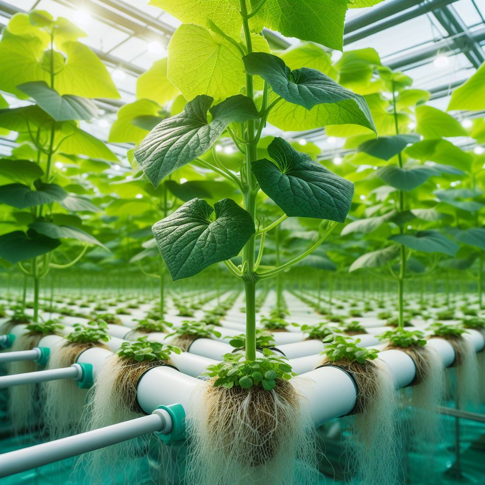

Mentimun Hidroponik
Alat dan Bahan
- Wadah atau Pot Tanaman yang lebih besar
- Sistem DWC (Deep Water Culture) atau Media Padat (coco coir, serat kelapa, rockwool).
- Air Pump dan Air Stone (untuk DWC).
- Nutrisi Hidroponik
- Benih atau Bibit Tanaman.
Langkah Budidaya
- Persiapkan wadah yang lebih besar dengan lubang drainase atau sistem DWC
- Isi wadah dengan larutan air nutrisi sesuai petunjuk.
- Tanam benih atau bibit di media padat atau tempatkan dalam pot net untuk DWC.
- Pastikan akar tanaman berada di dalam air di sistem DWC atau terus menerima nutrisi di media padat.
- Gunakan air pump dan air stone untuk oksigenasi air di sistem DWC.
- Monitor pH dan tingkat nutrisi secara teratur.
- Pemeliharaan harian untuk memastikan kondisi optimal tanaman.